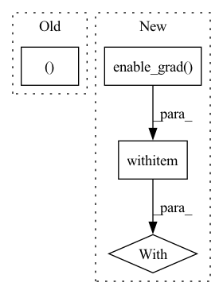

Pattern ID :1622
Before Change
x2.requires_grad = True
y1, y2 = ctx.function(x1, x2, mask)
grad = torch.autograd.grad(outputs=(y1, y2), inputs=(x1, x2), grad_outputs=grad_outputs)
return (None, *grad, None )
After Change
x1_grad = y1_grad + y1.grad
y1.grad = None
with torch .enable_grad():
x2.requires_grad = True
fx2 = ctx.layer.f_block(x2, mask)
fx2.backward(x1_grad)
In pattern: SUPERPATTERN
Frequency: 3
Non-data size: 4
Instances Fragment ID: 7654544
Project Name: rick-mccoy/reformer-pytorch
Commit Name: ba4ca176c189afc7a5ab76d9aea596478ea128a8
Time: 2020-01-15
Author: rickmccoy3141@gmail.com
File Name: model/reversible.py
M Class Name: Reversible
N Class Name: Reversible
M Method Name: backward(1)
N Method Name: backward(1)
M Parent Class: Function
N Parent Class: Function
M File Name: model/reversible.py
N File Name: model/reversible.py
M Start Line: 26
M End Line: 36
N Start Line: 24
N End Line: 49
Before Change
eloc = self.wf.local_energy(lpos)
eloc_all = hvd.allgather(eloc, name="local_energies")
e, s = torch.mean(eloc_all), torch.var(eloc_all)
err = self.wf.sampling_error(eloc_all)
// print dataAfter Change
// check if we have to compute and store the grads
grad_mode = torch.no_grad()
if self.wf.kinetic == "auto":
grad_mode = torch.enable_grad()
// distribute the calculation
num_threads = 1
hvd.broadcast_parameters(self.wf.state_dict(), root_rank=0)
torch.set_num_threads(num_threads)
with grad_mode :
// sample the wave function
pos = self.sampler(self.wf.pdf)
if self.wf.cuda and pos.device.type == "cpu":
pos = pos.to(self.device)
Fragment ID: 7654547
Project Name: nlesc-jcer/qmctorch
Commit Name: 9c3e63cd2b3fe345a850beb13cc978a28a4945b0
Time: 2020-07-16
Author: nicolas.gm.renaud@gmail.com
File Name: qmctorch/solver/solver_orbital_horovod.py
M Class Name: SolverOrbitalHorovod
N Class Name: SolverOrbitalHorovod
M Method Name: single_point(3)
N Method Name: single_point(3)
M Parent Class: SolverOrbital
N Parent Class: SolverOrbital
M File Name: qmctorch/solver/solver_orbital_horovod.py
N File Name: qmctorch/solver/solver_orbital_horovod.py
M Start Line: 223
M End Line: 279
N Start Line: 220
N End Line: 276
Before Change
fn_input.detach_()
args = (fn_input, sequence_input, linear_param0, linear_param1, bn_weight0, bn_bias0, bn_weight1, bn_bias1)
grad_out = ReversibleRNNFunction._forward_pass(*args)
return torch.autograd.grad(grad_out, args, grad_output) + (NoneAfter Change
with torch.no_grad():
inp0 = out0 - ReversibleRNNFunction._calc(out1, sequence_input, bn_weight1, bn_bias1, linear_param1)
inp1 = out1 - ReversibleRNNFunction._calc(inp0, sequence_input, bn_weight0, bn_bias0, linear_param0)
with torch .enable_grad():
fn_input = torch.cat([inp0, inp1], -1)
fn_input.detach_()
fn_input.requires_grad_(True)
args = (fn_input, sequence_input, linear_param0, linear_param1, bn_weight0, bn_bias0, bn_weight1, bn_bias1) Fragment ID: 7654543
Project Name: homebrewnlp/homebrewnlp
Commit Name: a0f0b4030e607ddb8baa74812668409814dc9a48
Time: 2020-07-13
Author: 39779310+ClashLuke@users.noreply.github.com
File Name: module.py
M Class Name: ReversibleRNNFunction
N Class Name: ReversibleRNNFunction
M Method Name: backward(2)
N Method Name: backward(2)
M Parent Class: torch.autograd.Function
N Parent Class: torch.autograd.Function
M File Name: module.py
N File Name: module.py
M Start Line: 50
M End Line: 58
N Start Line: 51
N End Line: 67